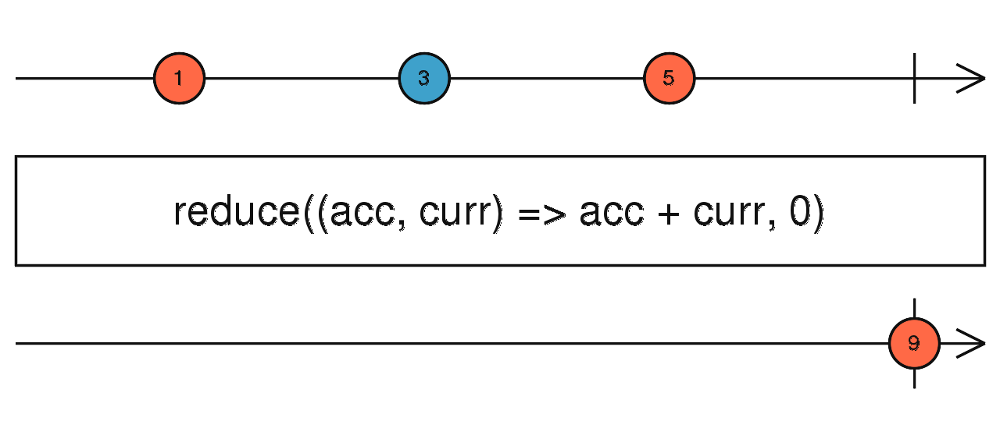

reduce
参数列表：
-
accumulator
function(acc: R, value: T, index: number): R
一个函数，会被用来对每一个value进行调用，所返回的值会作为下一次调用的第一个参数
-
seed
R
(可选)初始化的accumulator的值
返回值: Observable <R>
珠宝图:

功能说明:
- reduce 订阅Source,对每一个Source进行accumulator调用
- reduce只会在Source结束(complete)的时候返回一个值
备注事项:
点击不同按钮查看不同demo 代码效果